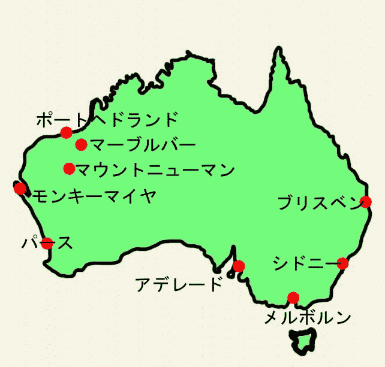

 オーストラリアに赴任し、前任者からここのマヨネーズとトマトケチャップについてご教授を賜った。曰く「マヨネーズ は全て砂糖が入り食べられない、トマトケチャップは砂糖がなくやはり食べられない」、これについては事実であった。し かし、ケチャップについては砂糖が無いほうが私には元々あっていたので特に問題はなかた。マヨネーズだけは確かに甘く 日本の味に慣れた人の口にあわないことは間違いない。在留邦人の多くは日本からの高価な輸入品を買い求めているようで したが、我々は僻地にいましたので諦めていました。赴任し１年位経ったある日近くの村に出かけました。ここも当然陸の孤島です、住んでいるところから２００ｋｍ位でマ ーブルバーという地区です。ここは昔金の採取地であり、昔は鉄道があったようです。そして第2次世界大戦時には空軍基 地があり日本軍が攻撃した土地らしいのです。暑さはオーストラリア国内１位と聞きます、最高気温が５０度を超えている ようです。町の人口は３００人位、街中は小さな店が数件パラパラとあります。帰りのガソリンを入れていたらそこでレス トランを経営していたので、昼食にしました。 中は小奇麗にしてありテレビがついていました、ふと見ると日本人選手団の入場風景が流れています。何とすっかり忘れ ていたアトランタオリンピックの開会式の日だったのです。昼食に一番無難なサンドイッチを注文しました。具は色々あっ たと思います、その中でほうれん草、チキンとマヨネーズあえの物がありました。当然甘いマヨネーズを使っています。 甘いマヨネーズは食べられないという先入観はオリンピック開会式を見ていて忘れていました。そして一口頬張ると、美 味しいのです。これは美味しいと思いぱくぱく食べてしまいました。 それからは当地の甘いマヨネーズを使い始めました。そんなある日、近所のスーパーで日本の有名な会社のマヨネーズを売 っているのを見つけました。もちろん高いのですが買いました、そしてこれぞ日本のマヨネーズと思い口にしたら、「何こ れ、なんの味もしないマズイ。こんなもの食えるか！」なのです。賞味期限は切れていません、なのに美味しく感じないの です。既に我々の味覚はオーストラリア風土に慣らされているようでした。 話は飛んで、「サイゴンから来た女」に書かれていると言う話です。彼女は日本に来て日本の米が不味くサイゴンのお米 を食べたかったらしいのです、その内に日本の米に慣れてしまいます。久し振りにサイゴンのお米を手に入れて食べると、 どうもすっきりしないらしいのです。サイゴンに一次帰国し日本の米を食べると、食べられずやはりサイゴンの米が良くな ると書いていました。そして、気候風土に適して食品嗜好が少し変わるのではないかと結論付けていました。 今度はビールの話ですが、外人が日本に来て日本のビールを旨く感じるらしい。味は全く違い、日本のは苦味がキツクされ ています。オーストラリア、ドイツ等のビールは苦味がほとんど無くすっきりしている。これも、もしかして日本の気候風 土には苦味が強い方が適しているのだろうか。私としては、この味付けは某社の策略と信じているのだが。 ・・・・・・とこんな事を考えると、気候風土に適した味が存在し、そこに慣れるとそこの味覚になるのかなと思いました。 追記： ポートヘドランドの田舎にある中華料理店で良くパーティーを行っていました。最後に日本風にお茶漬けを欲しくなり、 以前に赴任していた日本人が考案したお茶漬けを食べていた。このお茶漬けは、ご飯にザーサイを適当に乗せてジャスミン ティーをかけた物です。ここでは美味しく感じましたが・・・・帰国後は試していません。何となく日本では合わないよう な気がして・・・・・・・。誰か勇気のある方試してみてください。 ２００１年１１月 ６日 記
|